기계정비산업기사 (2005-03-06 기출문제)
1과목: 공유압 및 자동화시스템
1. 공기압 조정 유닛에서 공급되는 공기압이 6bar이고 실린더의 단면적이 10㎝2라고 하면 작용할 수 있는 하중은 몇kgf까지인가?
- 6kgf
- 60kgf
- 600kgf
- 6000kgf
(정답률: 53%)

2. 다음에서 실린더의 피스톤 속도를 증가시키고자 할 때 사용할 수 있는 밸브는?
- 이압밸브
- 셔틀밸브
- 급속배기밸브
- 속도조절밸브
(정답률: 57%)
3. 관(튜브)의 끝을 원뿔형으로 넓힌 구조를 가진 관 이음쇠는?
- 스위블 이음쇠
- 플레어드 관 이음쇠
- 셀프 실 이음쇠
- 플랜지 관 이음쇠
(정답률: 47%)
4. 회로압이 설정압을 넘으면 막이 유체압에 의하여 파열되어 압유를 탱크로 귀환시킴과 동시에 압력상승을 막아 기기를 보호하는 것은 ?
- 압력스위치
- 유체퓨즈
- 카운터밸런스밸브
- 감압밸브
(정답률: 65%)
5. 공압시스템의 장점에 해당되는 것은?
- 큰힘을 낼 수 있다.
- 정밀한 속도 조절이 가능하다.
- 제어방법 및 취급이 간단하다.
- 배기소음이 작다.
(정답률: 64%)
6. 2개 이상의 유압실린더를 동일한 속도로 동작시키고자 할때 실린더 조립상의 오차, 부하 분포의 불균일, 마찰저항의 차이 등으로 차이가 나는 것을 방지하기 위한 방법으로 틀린 것은?
- 유량조절밸브를 이용하여 조정한다.
- 동일한 모터를 실린더 개수 만큼 설치하여 기계적으로 동일회전수를 갖게 하므로 공급유량을 동일하게 한다.
- 각각의 실린더에 체크밸브를 설치하여 조정한다.
- 유압실린더를 직렬로 설치하여 공급유량을 동일하게 한다.
(정답률: 40%)
7. 다음 기호 중 가열기는?
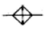
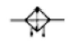
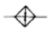
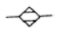
(정답률: 67%)
8. 다음의 회로는 유압의 미터-인 속도 제어회로이다. 장점에 해당하지 않는 것은?
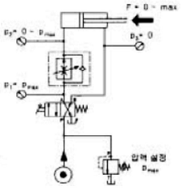
- 피스톤 측에만 압력이 걸린다
- 낮은 속도에서 일정한 속도를 얻는다
- 조절된 유압유가 실린더 측으로 인입되는데 실린더 측의 면적이 실린더 로드측 면적보다 크므로 낮은 속도 조절면에서 유리하다
- 부하가 카운터 밸런스 되어 있어 끄는 힘에 강하다
(정답률: 32%)
9. 다음 기호의 설명으로 옳은 것은?
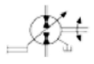
- 가변용량형, 2방향유동, 외부드레인, 인력조작
- 가변용량형, 2방향유동, 내부드레인, 인력조작
- 가변용량형, 2방향유동, 외부드레인, 조작기구미지정
- 정용량형, 2방향유동, 외부드레인, 인력조작
(정답률: 48%)
10. 공기압 장치에 사용되는 압축공기의 장점이 아닌 것은?
- 청결성
- 안전성
- 윤활성
- 저장성
(정답률: 68%)
11. 다음 중 계전기에 의한 제어 시스템과 비교하여 PLC의 특징으로 볼 수 없는 것은?
- 프로그램의 변경으로 제어 동작의 변경이 가능하다.
- 프로그래밍 언어로 래더 다이어그램이 있다.
- 입출력 장치의 착탈이 용이하다.
- 장치 구성에 시간이 많이 소요된다.
(정답률: 72%)
12. 충격 실린더(impact cylinder)의 특징이 아닌 것은 ?
- 상당히 큰 충격 에너지를 얻을 수 있다.
- 충격 실린더의 속도는 7.5-10m/sec까지 얻을 수 있다
- 큰 위치 에너지를 얻기 위해 설계된 실린더 이다.
- 일반적으로 복동 실린더의 형태이다.
(정답률: 41%)
13. 제어시스템에서 제어를 행하는 과정에 따른 분류 중 설명이 틀린 것은 ?
- 파일럿제어 - 메모리 기능이 없고 이의 해결을 위해 불논리 방정식을 이용한다.
- 메모리제어 - 출력에 영향을 줄 반대되는 입력신호가 들어올 때까지 이전에 출력된 신호는 유지된다.
- 시퀀스제어계 - 이전단계 완료여부를 센서를 이용하여 확인 후 다음단계의 작업을 수행한다.
- 조합제어 - 요구되는 입력 조건에 관계없이 그에 관련된 모든 신호가 출력된다.
(정답률: 71%)
14. 다음 중 유압펌프의 흡입불량으로 인하여 발생되는 결함이 아닌 것은?
- 토출유량의 감소
- 실린더 추력의 감소
- 작동유의 과열
- 펌프의 마모 및 파손
(정답률: 45%)
15. 60㎐, 4극 유도 전동기의 회전자 속도가 1710rpm일 때 슬립과 회전자유기전압 주파수는?
- 5％, 3㎐
- 6％, 4㎐
- 7％, 5㎐
- 8％, 6㎐
(정답률: 53%)
16. 모터의 운전시 브러시로부터 스파크가 일어나는 경우가 아닌 것은?
- 전기자 회로의 단선
- 보극의 극성 불량
- 과부하
- 계자회로의 단선
(정답률: 55%)
17. 다음 그림과 같이 불투명한 종이팩 안의 우유의 유·무를 검출해 낼 수 있는 센서는?
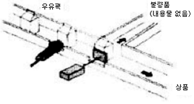
- 정전용량형 근접 스위치
- 고주파 발진형 근접 스위치
- 광전 스위치
- 리드 스위치
(정답률: 48%)
18. 다음 중 센서에 대한 설명으로 잘못된 것은?
- 물리적인 값을 전기신호로 변환하는 장치이다.
- 자동화 시스템에서 중요한 역할을 한다.
- 정보의 전달을 기계적으로 수행하는 장치이다.
- 사람의 오감과 같은 역할을 하는 제어 시스템 요소이다.
(정답률: 58%)
19. 직류 전동기의 회전수를 일정하게 유지하기 위해 전압을 변화시킨다. 이 때 회전수는 자동제어계의 구성에서 무엇과 같은가 ?
- 제어대상
- 제어량
- 조작량
- 입력값
(정답률: 38%)
20. 반도체 메모리의 특징이 아닌 것은 ?
- 기계적 구동부가 없음
- 작은 크기
- 빠른 처리 속도
- 고자계 자성체
(정답률: 63%)
2과목: 설비진단관리 및 기계정비
21. 순환 급유법에 속하며 일종의 모세관 현상에 의하여 기름을 마찰면에 보내게 되는데 이 때 털실이 직접 마찰면에 접촉하게 되는 급유법은?
- 패드 급유법
- 칼라 급유법
- 버킷 급유법
- 비말 급유법
(정답률: 59%)
22. 진동측정기기의 검출단 설치 방법 중 주파수 특징이 가장 좋은 것은?
- 접착제
- 비왁스
- 마그넷
- 손고정
(정답률: 31%)
23. 다음 중 비교 측정에 속하는 것은 ?
- 버어니어 캘리퍼스
- 다이얼 게이지
- 마이크로미터
- 측장기
(정답률: 60%)
24. 유체 기계에서 국부적인 압력 저하에 의해서 기포가 생겨 고압이 되면 파괴되어 발생하는 불규칙한 진동을 무엇이라고 하는가?
- 공동현상
- 오일휩
- 언밸런스
- 압력 간섭
(정답률: 67%)
25. 송풍기의 베어링 과열 원인이 아닌 것은?
- 베어링의 마모
- 임펠러(impeller)의 부식
- 임펠러(impeller)와 케이싱(casing)의 접촉
- 그리스(grease)의 과충전
(정답률: 39%)
26. 실로코 통풍기의 베인 방향으로 옳은 것은?
- 전향베인
- 경향베인
- 후향베인
- 수직베인
(정답률: 65%)
27. 회전 기계 진동에서 저주파의 주요 이상 현상이 아닌 것은?
- 언밸런스
- 미스 얼라이먼트
- 풀림
- 압력맥동
(정답률: 52%)
28. 고장이 나서 설비의 정지 또는 유해한 성능저하를 가져온 후에 수리를 행하는 보전방식은?
- 사후보전(BM)
- 예방보전(PM)
- 개량보전(CM)
- 보전예방(MP)
(정답률: 71%)
29. M16 볼트를 길이 15cm의 스패너를 이용하여 1000 kgfㆍcm의 토크로 체결하고자 한다.체결에 필요한 스패너의 조임력은?
- 33.3 kgf
- 66.7 kgf
- 1000 kgf
- 15000 kgf
(정답률: 55%)
30. 와세린(petrolatum) 방청유의 종류가 아닌 것은?
- NP-4
- NP-5
- NP-6
- NP-7
(정답률: 68%)
31. 설비열화를 방지하기위한 조치로서 부적절한 것은?
- 전원스위치를 정기적으로 교체한다.
- 패킹, 시일 등을 정기적으로 점검한다.
- 가동전에 베어링, 기어 등 회전부에 윤활유를 공급한다.
- 오일필터를 규정된 시간마다 정기적으로 교환한다.
(정답률: 76%)
32. 축의 끼워 맞춤부 마모 수리법 중 축지름이 작아져도 사용 할 수 있을 때 적합한 축의 수리법은?
- 마모부의 살 더하기 용접
- 마모 부분 다시 깎기
- 마모 부분에 로오렛 수리
- 마모 부분 금속용사
(정답률: 50%)
33. 공장소음, 특히 저주파 소음을 방지할 수 있는 방법은?
- 소음방지 재료의 강성을 높인다
- 소음방지 재료의 무게를 높인다
- 소음방지 재료의 내부 댐핑을 줄인다
- 소음방지 재료의 무게를 줄인다
(정답률: 54%)
34. 효율적인 설비관리를 하기위하여 설비대장을 작성하고 개개의 설비에 고유번호를 부착하고자 한다. 적절하지 않은 것은?
- 설비번호는 개별설비의 눈에 잘 띄는곳에 부착한다.
- 설비대장에는 설비의 도입일자, 가격, 크기 등을 기록하고 정비시 보수내용을 기록한다.
- 개별설비마다 눈에 잘 보이는 곳에 설비대장을 비치한다.
- 설비번호는 안전하고 견고하게 부착한다.
(정답률: 42%)
35. 접촉면 사이에 마찰제가 충분한 유막을 형성하고 마멸이나 발열이 미소하여 베어링으로서 가장 양호한 마찰 상태는?
- 고체 마찰
- 유체 마찰
- 경계 마찰
- 복합 마찰
(정답률: 66%)
36. 하우징에 베어링을 설치할 때 한쪽 또는 양쪽을 좌우로 이동할 수 있게 하는 이유는?
- 베어링 마찰 감소
- 윤활유의 원활한 공급
- 베어링의 끼워맞춤 용이
- 열팽창에 의한 소손 방지
(정답률: 64%)
37. 좁은 의미의 설비 관리에 속하는 것은?
- 조사
- 연구
- 보전
- 제작
(정답률: 78%)
38. 다음 설명 중 옳은 것은?
- 그리스는 순환급유가 불가능하다.
- 그리스는 점도에 따른 국제화 규격은 없다.
- 그리스는 광유로는 제조할 수 없다.
- 그리스는 증주제로만 제조할 수 있다.
(정답률: 47%)
39. 송풍기(blower)는 일반적으로 사용 공기압력이 몇kgf/cm2인가?
- 0.01 이하
- 0.1∼1.0
- 2.0∼10
- 20 이상
(정답률: 70%)
40. 유량 180ℓ/min, 100m 높이로 물을 보내고자 한다. 펌프에 필요한 동력은 약 몇 kW인가?
- 1.8 kW
- 2.9 kW
- 4 kW
- 176.5 kW
(정답률: 28%)
3과목: 공업계측 및 전기전자제어
41. 다음 내용 설명 중 옳지 않은 것은 ?
- 오버슈트는 응답중에 생기는 입력과 출력사이의 편차량을 말한다.
- 시간지연이란(time delay) 응답이 최초로 희망값의 30% 진행되는데 요하는 시간이다.
- 정정시간(settling time)은 응답의 최종값의 허용범위가 5∼10[%]내에 안정되기까지 요하는 시간이다.
- 이상시간(rise time)이란 응답이 희망값의 10[%]에서 90[%]까지 도달하는데 요하는 시간이다.
(정답률: 47%)
42. 다음 그림의 벤 다이어그램 A와 B를 논리회로로 비교한다면 어떤 회로가 되는가？
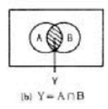
- AND 회로
- NAND 회로
- OR회로
- NOR 회로
(정답률: 71%)
43. 그림은 유럽식 계장의 도면기호이다 어떤 종류를 나타낸 것인가?
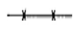
- 전기신호
- 공기압신호
- 유압신호
- 모세관
(정답률: 40%)
44. 측온 저항온도계에서 사용하는 금속 저항체가 아닌 것은?
- 백금
- 니켈
- 안티몬
- 구리
(정답률: 58%)
45. 동작 속도가 가장 빠른 논리 gate는 다음 중 어느 것인가?
- DTL 게이트
- CMOS 게이트
- ECL 게이트
- RTL 게이트
(정답률: 27%)
46. 인덕턴스 L[H]에 저항 R[Ω]이 직렬로 연결되었을 때 시정수(τ)는 어느 것인가?
- RL
- 1/RL
- L/R
- R/L
(정답률: 40%)
47. 트랜지스터에 관한 설명 중 잘못된 것은?
- npn형과 pnp형이 있다.
- 양극성 트랜지스터(BJT)이다.
- 에미터, 베이스, 콜렉터 층으로 구분된다.
- 물리적 구조로 보면 가운데층이 에미터이다.
(정답률: 53%)
48. 제어 요소의 동작 중 연속 동작이 아닌 것은?
- 미분동작
- on-off동작
- 비례미분동작
- 비례적분동작
(정답률: 67%)
49. 다음 중 반도체 광센서는?
- 포토 다이오드
- 포토 트랜지스터
- 포토 사이리스터
- 포토 커플러
(정답률: 38%)
50. 배율기를 이용하여 전압의 측정범위를 확대하려면 저항을 어떻게 연결하여야 하는가?
- 직렬접속을 한다.
- 병렬접속을 한다.
- 직ㆍ병렬 접속을 한다.
- 혼렬 접속을 한다.
(정답률: 43%)
51. 다음 연산 증폭기의 증폭도는?
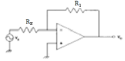
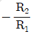
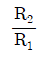
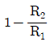
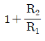
(정답률: 55%)
52. 제어 밸브는 다음 중 어디에 속하는가?
- 변환기
- 조절기
- 설정기
- 조작기
(정답률: 66%)
53. 부궤환증폭기의 특징이 아닌 것 ?
- 이득이 증가한다.
- 찌그러짐이 감소한다.
- 입력저항이 증가한다.
- 출력저항이 감소한다.
(정답률: 43%)
54. 셰이딩 코일형 전동기의 특성이 아닌 것은 다음 중 어느 것인가 ?
- 구조가 간단하다.
- 회전 방향을 바꿀 수 있다.
- 효율이 좋지 않다.
- 기동 토크가 매우 작다.
(정답률: 54%)
55. 어떤 저주파 전압을 측정하였더니 7.5[V]를 지시하였다. 이것은 몇 [dB]에 해당하는가 ? (단, 기준 전압은 0.75[V]이다.)
- 25 [dB]
- 20 [dB]
- 15 [dB]
- 10 [dB]
(정답률: 27%)
56. 다음 그림의 회로도 명칭은？
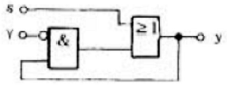
- 촌동 회로
- 병렬 회로
- 세트 우선회로
- 리셋 우선회로
(정답률: 44%)
57. 베르누이의 정리에 의해 유량을 측정하는 방식은?
- 면적 유량계
- 용적 유량계
- 전자 유량계
- 차압 유량계
(정답률: 28%)
58. 최대눈금 5[mA]의 직류 전류계로 50[A]까지의 전류를 측정 하려면 약 몇[Ω]의 분류기가 필요한가? (단, 직류 전류계의 내부저항은 10[Ω]이다).
- 0.001 [Ω]
- 0.01 [Ω]
- 0.1 [Ω]
- 0.2 [Ω]
(정답률: 32%)
59. 보일러의 온도를 80[℃]로 유지시키기 위하여 제어대상에 보내주는 조작량은?
- 온도
- 보일러
- 기름
- 검출부
(정답률: 43%)
60. 시퀀스제어에 사용되는 기기이다. 조작·출력기기에 해당 되지 않는 것은?
- 전자접촉기
- 전자릴레이
- 전자클러치
- 전동기
(정답률: 35%)
4과목: 기계정비 일반
61. 저융점 합금(Fusible alloy)의 설명 중 옳지 않은 것은?
- 포정계 합금
- 로즈합금, 뉴톤합금
- 주성분은 Pb, Sn, Cd
- 전기휴즈, 안전벨브등에 사용
(정답률: 24%)
62. 강과 주철은 어느 것을 기준으로 하여 구분하는가 ?
- 첨가 금속함유량
- 탄소함유량
- 금속조직 상태
- 열처리상태
(정답률: 62%)
63. 피절삭성이 양호하여 고속절삭에 적합한 강은 ?
- 레일강
- 스프링강
- 쾌삭강
- 외륜강
(정답률: 64%)
64. 다음 중 다이스강(dies steel)의 특징이 아닌 것은?
- 고온경도가 낮다.
- 경도가 높아 내마모성이 좋다.
- 풀림처리 상태에서 가공성이 양호하다.
- 담금질에 의한 변형이 적다.
(정답률: 52%)
65. 염소를 함유한 물을 쓰는 수관에서 주로 발생하는 현상으로서 불순물 또는 부식성 물질이 녹아 있는 수용액의 작용에 의해 황동의 표면 또는 깊은 곳까지 나타나는 현상은?
- 탈아연 부식
- 자연균열
- 경년변화
- 풀림경화
(정답률: 58%)
66. 풀림의 목적이 아닌 것은?
- 강의 경도를 저하시켜 연하게 한다.
- 경도를 증가시킨다.
- 조직을 균질하게 한다.
- 내부응력을 제거시킨다.
(정답률: 43%)
67. 알루미늄의 용도로서 적당하지 않는 것은?
- 드로잉 재료
- 다이캐스팅 재료
- 자동차 구조용 재료
- 절삭날 재료
(정답률: 64%)
68. 구리의 특성이 아닌 것은 ?
- 가공성 용이
- 연성 양호
- 내식성 양호
- 접합성 불량
(정답률: 68%)
69. 크랭크 축과 같이 복잡하고 큰 재료의 표면을 경화시키는데 가장 많이 사용하는 열처리 방법은?
- 침탄법
- 불꽃경화법
- 질화법
- 청화법
(정답률: 36%)
70. 서멧(cermet)의 특성이 아닌 것은?
- 세라믹과 금속의 특성을 가진다.
- 세라믹과 금속을 결합시킨 소결 복합체이다.
- 고온에서 불안정하며 내열성이 나쁘다.
- 산화물계 서멧에 사용되는 재질은 Al2O3나 BeO 등이다.
(정답률: 46%)
71. V 벨트의 각도는 몇 도가 기준인가?
- 40°
- 43°
- 44°
- 46°
(정답률: 50%)
72. 체결용 나사가 자립상태(自立狀態)를 유지하고 있을 경우 나사의 효율은 몇 % 이하인가?
- 50
- 60
- 70
- 80
(정답률: 31%)
73. 성크키이의 폭, 높이, 길이가 각각 12(mm), 8(mm), 140(mm)일 때 키이의 접선력(kgf)은 얼마인가? (단, 허용전단응력 800kgf/cm2 이다.)
- 1344
- 1544
- 13440
- 15440
(정답률: 39%)
74. 하중 3ton이 걸리는 압축코일 스프링의 변형량이 10㎜일때 스프링 상수는 몇 ㎏f/㎜인가?
- 300
- 1/300
- 100
- 1/100
(정답률: 43%)
75. 미끄럼 베어링의 볼 베어링에 대한 비교 중 틀린 것은?
- 내충격성이 크다.
- 소음이 크다.
- 고온에 약하다.
- 교환성이 나쁘다.
(정답률: 33%)
76. 지름 20 mm, 피치 2 mm인 2줄 나사를 10회전 시켰더니 완전하게 체결되었다. 이 나사의 리드(lead)는 몇 mm인가?
- 20
- 40
- 4
- 2
(정답률: 21%)
77. 레이디얼 저널베어링에 작용하는 압력 P를 구하는 식은? (단, W : 베어링하중, d : 저널의 지름, ℓ: 저널의 길이이다.)
- P = (dℓ)/W
- P = W/(dℓ)
- P = d/(Wℓ)
- P = W/(d2 ℓ)
(정답률: 32%)
78. 모듈(module) 2, 피치원지름 60 mm인 표준 스퍼어 기어의 잇수는?
- 30
- 40
- 50
- 60
(정답률: 74%)
79. 긴장측 장력 Tt가 이완측 장력 Ts의 2배인 경우 긴장측장력을 160㎏f라 할 때 유효 장력은 몇 ㎏f인가? (단, 원심력의 영향은 무시한다.)
- 80
- 90
- 160
- 320
(정답률: 42%)
80. 핀 전체가 두 갈래로 되어있어 너트의 풀림 방지나 핀이 빠져 나오지 않게 하는데 사용되는 핀은?
- 테이퍼핀
- 너클핀
- 분할핀
- 평행핀
(정답률: 62%)